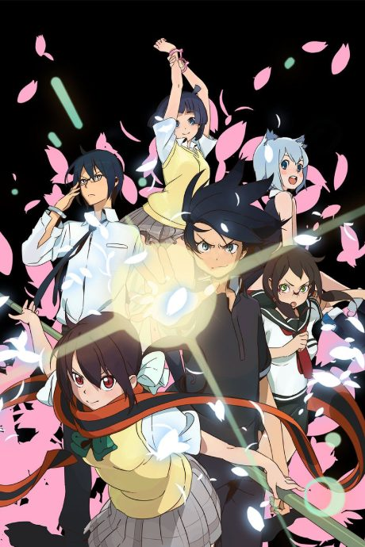

Anime
Manga
Yozakura Quartet: Hana no Uta
夜桜四重奏 ~ハナノウタ~
After the anime, read the manga from Chapter 57.
7.3AniList
—Animeter
13 epEpisodes
Watch order
In airing order. Episode numbers on this site count straight through every season, so season 2 starts at episode —.
1
2013 · TV
Yozakura Quartet: Hana no Uta
Episodes1–1313 ep
Films, OVAs and specials
Not counted in the episode numbers above.
·
2013 · OVA
Yozakura Quartet: Tsuki ni Naku
Sources: AniList